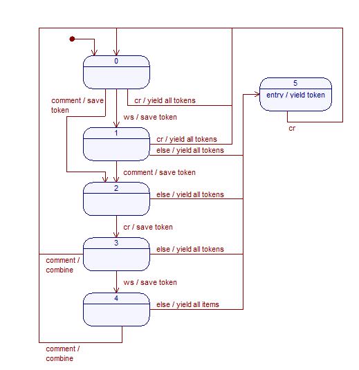

-*- coding: utf-8 -*-
Overview
This program attempts to bring to life some of the ideas espoused by
Donald Knuth:
I believe that the time is ripe for significantly better
documentation of programs, and that we can best achieve this by
considering programs to be works of literature. Hence, my title:
"Literate Programming."
Let us change our traditional attitude to the construction of
programs: Instead of imagining that our main task is to instruct a
computer what to do, let us concentrate rather on explaining to
human beings what we want a computer to do.
The practitioner of literate programming can be regarded as an
essayist, whose main concern is with exposition and excellence of
style. Such an author, with thesaurus in hand, chooses the names
of variables carefully and explains what each variable means. He
or she strives for a program that is comprehensible because its
concepts have been introduced in an order that is best for human
understanding, using a mixture of formal and informal methods that
reinforce each other.
-- Donald Knuth, “Literate
Programming (1984)” in Literate Programming. CSLI, 1992, pg.
99.
I believe that a program must exist simultaneously in two forms: as
beautifully-formatted document replete with digrams and other
illustrations and as source code, reflecting two complementary
approaches to develping a program. A document provides a programmer
with a means to express and record their design of the program,
focusing on high-level design. As source code, it captures the
minute details of an implementation of that idea.
Therefore, the purpose of this program is to provide a bidirectional
link between a source file and a corresponding HTML document, so that
the source can be exactly recreated from the HTML file and vice versa.
The intention is to enable editing in the most convenient location:
for code development and debugging, in a text editor / IDE; for design and
documentation, in a WYSIWYG HTML editor.
Getting started
Install Python (tested with v 2.6), Pygments
(tested with v 1.4), and Beautiful Soup
(tested with v3.2.0; the 4.x series was tested and didn't work well
with the default parser). Then, simply run the program to convert
between pyg.py and pyg.html (the newer
file is converted to the other format).
TODO: show a short demo video of how it's used.
API
TODO: document the API.
Status
Currently, the bidirectional link is functional (though needs lots of
testing, some bug fixes, and better documentation). I'm using it to write
this document.
Bugs
- The HTML to code link assumes there's no comments before the
pre tag. I need some way to detect this an insert a
comment.
- The code to html link incorrectly merges comments with
different amount of leading whitespace. It shouldn't.
- The code to html link translates ## to # # (However, I don't
think there's a workaround for this).
- The program dorks the
beginning and ending tags, putting extra
lines at the end and eventually moving comments around on the
first line.
- SeaMonkey doesn't like <pre>. It's not that happy with
<span>, either. I suspect that only wrapping code lines in
a <pre> would help. Or, I could drop the pre entirely and
use a <span> on the spaces; I'm not sure which is better.
Either way, I need to minimize <pre> in the document.
- The implementation is fragile -- an unescaped tag in the code
destroys the HTML; likewise, the HTML editor can easily lose all
whitespace and totally destroy the code.
To do
- Split this up. It's just too much to keep all in one document.
- Find a good HTML editor. KompoZer seems better than SeaMonkey, but doesn't render a lot of things correctly.
- Implement a file
change monitor to auto-translate on save.
- Fix line numbering -- have the line numbers skip an empty line
on code to HTML; remove line numbers in HTML to code.
- Offer some sort of cross-reference capability. This will
require some significant thought.
- Much better testing. In particular, test all possible paths
through the state machine.
- The HTML produced by the SeaMonkey composer doesn't read
nicely in the code. Establish some sort of pretty-print routine
to print code-readable HTML.
- Come up with a better visual design. Blue text is annoying.
Perhaps use Sphinx styles?
- Use a QTextEdit
widget to program a GUI editor. It would be really neat to:
- Open either HTML or source code
- Have a hotkey toggle between HTML and text views, syncing
cursor position in the toggle.
- Auto-reload if either file is modified
- Support C and C++ better. Waiting on a lexer fix before working on this any more. It's somewhat untested and probably doesn't support /* */
comments.
- Look for unescaped < and >
characters. I need a nice regexp to distinguish a true tag from
random text.
- Use ReST instead of HTML as the underlying
language, since that is so much more readable in code. Would need to
write / find a good HTML to ReST translator. Or perhaps just
translate recognized HTML to ReST and leave anything unrecognized in
the source.
- Incorproate a language parser like Doxygen to auto-crossref function
names, variables, etc. Add a named anchor for each.
- One option: only identify global names.
- Another option: identify all names, but add scoping -- perhaps function::name for local variables. However, dealing with names at a deeper nesting level would get messy (func::second {::blah?)
- Fix formatting: add a width: blah to the style for each comment based
on the number of preceeding characters.
- Use a thinner wrap: get rid of <pre> tags, don't wrap comments
in any html. This would, I think, make HTML editors work a bit
better.
- Do a better job of matching what HTML shows with the code extracted. There's a lot of ways to shoot yourself in the foot with the present scheme. Examples: <pre><span class="c">comment<br>code</pre> -- Looks right, but parsed as a comment.
- Find a way to avoid the font-size: small directive. Code like <h2><span class="c">blah</span></h2> produces very small type. Ideally, ALL comments would be in body, with code wrapped in a <code> tag and styled with white-space: pre or replaced with lots of entities.
Implementation
The program consists of two separate portions (code to HTML and HTML
to code) with a bit of glue code, supplemented with tests.
Code to HTML
The code to HTML link consists of modifications to
Pygments, a wonderful source
hilighter. Pygments already provides a lexer to break the input code into
tokens and an HTML formatter to transform those tokens to HTML, based upon a
variety of styles. These modification therefore change a bit of functionality
in the HTML formatter. In particular:
- Comments are indented and typeset in a proportional font in
_create_stylesheet.
- Multi-line comments are merged in
_merge_comments.
- _format_lines1 carries out special
processing for comments. In particular, comments are assumed to
contain HTML, so that no escaping is done on them. In
addition, comment #, //, or /* characters are automatically
removed during translation to preserve the visual appearance of
the document.
- Each line is wrapped in a <pre> tag in
_format_lines, after being passed
through the formatting pipeline in the two preceeding
steps.
from pygments import highlight
from pygments.formatters import HtmlFormatter
from pygments.formatters.html import _escape_html_table
from pygments.token import Token
import re
The string indicating a comment in the chosen programming language. This must
end in a space for the regular expression in _format_lines1 to work. The space
also makes the output a bit prettier.
comment_string = '# '
comment_string = '// '
File extension for the source file
source_extension = '.py'
source_extension = '.cpp'
This class converts from source to to HTML. As the overview
states, this uses Pygments to do most of the work, adding only a formatter
to that library. Therefore, to use this class, simply select this class
as the formatter for Pygments (see an example
below).
class CodeToHtmlFormatter(HtmlFormatter):
Typeset comments
The first element of the class introduces a proportional font to the formatter. This sort of change really belongs in a style, but the current style framework don't provide a way to specify this. Rather than introduce this change, I instead modified the way that the Pygments style was used by the formatter. Specifially, I copied the _create_stylesheet routine verbatim from Pygments then added code to typeset comments in a proportional font.
def _create_stylesheet(self):
t2c = self.ttype2class = {Token: ''}
c2s = self.class2style = {}
for ttype, ndef in self.style:
name = self._get_css_class(ttype)
style = ''
BAJ modification: typeset comments nicely. In particular:
- Because comments are embedded in <pre> text, the white-space property must be returned to normal to allow line wrapping, consuming of additional space, etc. One concern: now, whitespace in the code will no longer match whitespace in the HTML document.
- On Chrome and SeaMonkey, the proportional
font is much larger than its corresponding monospaced font used for the
code. Using
font-size: small helps. Specifying the font as a percentags
is bad, because if the <span> tags get nested, all fonts in the
nest get smaller! - By adding the display: inline-block attribute, the entire comment will be indented by whatever spaces preceed it. However, this either grows the right margin by the indent or causes the entire comment to fall on to the next line, making it hard to read. The addition of
width: 5.5in avoid this problem by limiting the max width of a comment. An ideal solution would be to dynamically set this so the width extends to the edge of the screen, but this would require JavaScript (I think).
- TODO: No multi-line comment support yet.
if (ttype is Token.Comment) or (ttype is Token.Comment.Single):
style += 'font-family: sans-serif; white-space: normal; ' + \
'font-size: small; display: inline-block; width: 5.5in; '
End of modification.
if ndef['color']:
style += 'color: #%s; ' % ndef['color']
if ndef['bold']:
style += 'font-weight: bold; '
if ndef['italic']:
style += 'font-style: italic; '
if ndef['underline']:
style += 'text-decoration: underline; '
if ndef['bgcolor']:
style += 'background-color: #%s; ' % ndef['bgcolor']
if ndef['border']:
style += 'border: 1px solid #%s; ' % ndef['border']
if style:
t2c[ttype] = name
save len(ttype) to enable ordering the styles by
hierarchy (necessary for CSS cascading rules!)
c2s[name] = (style[:-2], ttype, len(ttype))
Pygments calls this routine (see the HtmlFormatter) to transform tokens to first-pass formatted lines. We need a two-pass process: first, merge comments; second, transform tokens to lines. This wrapper creates that pipeline, yielding its results as a generator must. It also wraps each line in a <pre> tag.
def _format_lines(self, token_source):
nl_token_source = self._expand_nl(token_source)
merged_token_source = self._merge_comments(nl_token_source)
source = self._format_lines1(merged_token_source)
for is_code, line in source:
if is_code and line.endswith('\n'):
yield is_code, '<pre>' + line[:-1] + '</pre>\n'
else:
yield is_code, line
def _expand_nl(self, token_source):
Break any comments ending in a newline into two separate tokens
for ttype, value in token_source:
if (ttype == Token.Comment.Single) and value.endswith('\n'):
yield ttype, value[:-1]
yield Token.Text, u'\n'
else:
yield ttype, value
Merge multi-line comments
This routine takes tokens as its input, combining multiple lines of
single-line comments separated only by a newline into a single comment
token. It's structured as a state machine, per the diagram below.
Essentially, the machine looks for a multiline comment, which consists
of: a newline, optional whitespace, a comment, newline, optional
whitespace, a comment. When this sequence is found such that the two whitespaces are identical, the two comments are combined with any intervening whitespace and the search continues. Additional comments:
- Transitions away from the sequence must be handled carefully (see the diagram). Each state may be presented with a comment, newline, whitespace, or any other token and must handle each possibility. To do this,
token_stack contains a stack of tokens collected while walking through the state machines, which can be produced when the input varies from the multiline-comment path.
- "Whitespace" in this context does not include a newline. See the
ws variable.

The state machine syntax: <condition / action>, so that nl / yield all tokens means that if a newline (\n character) is found, all tokens in token_stack will be yielded before moving to the next state. The additional abbreviation used: "ws" for whitespace (which does not include a newline).
Note that the obvious alternative of doing this combining using a regular expression on the source text before tokenization doesn't work (I tried it). In particular, this removes all indications of where lines were broken earlier, making the comment a mess when going from the HTML back to code. It's possible that, with line wrapping implemented, this could be a much simpler and better approach.
def _merge_comments(self, token_source):
Keep a history of tokens; if we can't combine then, then yield a
bunch of these.
token_stack = []
A regular expression for whitespace not containing a newline
ws = re.compile(r'^[ \t\r\f\v]+$')
The sequence (a state machine) needed to combine comments.
0 - at the beginning of a line, now waiting for whitespace (initial state)
1 - waiting for a comment
2 - waiting for a newline
3 - waiting for whitespace or a comment
4 - waiting for a comment
5 - waiting for a newline
state = 0
for ttype, value in token_source:
print state, ttype, '"%s"' % value, token_stack
if state == 0:
if re.search(ws, value):
token_stack.append([ttype, value])
state = 1
elif ((ttype is Token.Comment) or
(ttype is Token.Comment.Single)):
token_stack.append([ttype, value])
state = 2
else:
While the code sequence to yield all tokens is repeated frequently and hence an excellent candidate for a function, the requirement of a yield keeps it from being easily placed in a function. So, I've just used a copy and paste approach instead.
for t in token_stack:
yield t
token_stack = []
yield ttype, value
state = 0 if value == '\n' else 5
elif state == 1:
Assume we will never receive two whitespace tokens back to back.
assert(not re.search(ws, value))
if ((ttype is Token.Comment) or
(ttype is Token.Comment.Single)):
token_stack.append([ttype, value])
state = 2
else:
for t in token_stack:
yield t
token_stack = []
yield ttype, value
state = 0 if value == '\n' else 5
elif state == 2:
For now, assume we will never receive whitespace following a comment. TODO: this could happen in C: /*blah*/
assert(not re.search(ws, value))
For now, assume we will never receive two comment tokens back to back. TODO: this could happen in C, perhaps as a /*blah*//*blah*/.
assert( (ttype is not Token.Comment) and
(ttype is not Token.Comment.Single) )
if value == '\n':
token_stack.append([ttype, value])
state = 3
else:
for t in token_stack:
yield t
token_stack = []
yield ttype, value
state = 5
elif state == 3:
if re.search(ws, value):
token_stack.append([ttype, value])
state = 4
elif ((ttype is Token.Comment) or
(ttype is Token.Comment.Single)):
See if two comments can be combined. The second comment (in value) has no whitespace, so the first comment shouldn't either. In this case, the token_stack should have 2 elements: comment, newline. If it has 3 elements (ws, comment, newline, comment), don't combine.
if len(token_stack) == 2:
token_stack[0][1] += '\n' + value
del token_stack[1]
state = 2
else:
assert(len(token_stack) == 3)
Can't merge, so yield first comment
for i in range(3):
yield token_stack[0]
del token_stack[0]
and save the second comment on the stack
token_stack.append([ttype, value])
state = 2
else:
for t in token_stack:
yield t
token_stack = []
yield ttype, value
state = 0 if value == '\n' else 5
elif state == 4:
For now, assume we will never receive whitespace following a comment. TODO: this could happen in C: /*blah*/
assert(not re.search(ws, value))
if ((ttype is Token.Comment) or
(ttype is Token.Comment.Single)):
See if two comments can be combined. The second comment has no whitespace; the first comment must have the same anount of whitespace. In this case, token_stack should have 4 elemements: ws, comment, nl, ws.
if (len(token_stack) == 4 and
(token_stack[0][1] == token_stack[3][1])):
token_stack[1][1] += '\n' + token_stack[3][1] + value
del token_stack[2]
del token_stack[2]
state = 2
else:
Can't merge, so yield first comment
for i in range(len(token_stack) - 1):
yield token_stack[0]
del token_stack[0]
and save the second comment on the stack
token_stack.append([ttype, value])
state = 2
else:
for t in token_stack:
yield t
token_stack = []
yield ttype, value
state = 0 if value == '\n' else 5
elif state == 5:
yield ttype, value
if value == '\n':
state = 0
else:
assert(False)
When out of tokens, pull any remaining from the stack
for t in token_stack:
yield t
Special processing for comments
Copied verbatim from Pygments' _format_lines, then modified to
not escape comments and remove inital comment chars
def _format_lines1(self, tokensource):
"""
Just format the tokens, without any wrapping tags.
Yield individual lines.
"""
BAJ: regular expression to remove comment chars
regexp = re.compile(r'(^[ \t]*)' + comment_string + '?', re.MULTILINE)
nocls = self.noclasses
lsep = self.lineseparator
for <span style=""> lookup only
getcls = self.ttype2class.get
c2s = self.class2style
escape_table = _escape_html_table
lspan = ''
line = ''
for ttype, value in tokensource:
if nocls:
cclass = getcls(ttype)
while cclass is None:
ttype = ttype.parent
cclass = getcls(ttype)
cspan = cclass and '<span style="%s">' % c2s[cclass][0] or ''
else:
cls = self._get_css_class(ttype)
cspan = cls and '<span class="%s">' % cls or ''
BAJ: If this is a comment, assume we're already using HTML and
don't need to escape characters.
if ((ttype is Token.Comment) or
(ttype is Token.Comment.Single)):
Remove the comment character (and one space, if it's there)
value = re.sub(regexp, r'\1', value)
Don't split, since we merge multi-line comments
parts = [value]
Kludge to get line numbers to be correct, though annoying.
for i in range(value.count('\n')):
yield 0, ''
else:
parts = value.translate(escape_table).split('\n')
for all but the last line
for part in parts[:-1]:
if line:
if lspan != cspan:
line += (lspan and '</span>') + cspan + part + \
(cspan and '</span>') + lsep
else: both are the same
line += part + (lspan and '</span>') + lsep
yield 1, line
line = ''
elif part:
yield 1, cspan + part + (cspan and '</span>') + lsep
else:
yield 1, lsep
for the last line
if line and parts[-1]:
if lspan != cspan:
line += (lspan and '</span>') + cspan + parts[-1]
lspan = cspan
else:
line += parts[-1]
elif parts[-1]:
line = cspan + parts[-1]
lspan = cspan
else we neither have to open a new span nor set lspan
if line:
yield 1, line + (lspan and '</span>') + lsep
By default, the html formatter wraps the code in a div and a pre.
Don't wrap it at all.
def wrap(self, source, outfile):
return source
Supporting code
Define a new style based on the default style, but which
places comments in a non-italic font.
Because the base class (Styles) is a metaclass, first
change the desired member, then inherit (so the metaclass
runs on the modified value in the default style).
from pygments.styles.default import DefaultStyle
from pygments.token import Comment
DefaultStyle.styles[Comment] = "#408080"
class CodeToHtmlStyle(DefaultStyle):
pass
from pygments.lexers import get_lexer_for_filename
Use Pygments with the CodeToHtmlFormatter to translate a source file to an HTML file.
def CodeToHtml(baseFileName):
in_file_name = baseFileName + source_extension
code = open(in_file_name, 'r').read()
formatter = CodeToHtmlFormatter(full=True, nobackground=True,
style=CodeToHtmlStyle)
outfile = open(baseFileName + '.html', 'w')
lexer = get_lexer_for_filename(in_file_name)
hi_code = highlight(code, lexer, formatter)
Remove a little goop created by the full=True option above
hi_code = hi_code.replace('\n<h2>' + formatter.title + '</h2>\n\n', '', 1)
Force an <pre> tag to occupy one line, instead of collapsing to an empty element, with min-height: 1em. Make it single spaced instead of the default double spacing with margin: 0px.
hi_code = hi_code.replace('pre { line-height: 125%; }',
'pre { line-height: 125%; margin: 0px; min-height: 1em }', 1)
outfile.write(hi_code)
print("Wrote " + baseFileName + '.html')
HTML to Code
The HTML to code link relies on Beautiful Soup.
Some simplifying assumptions about the structure of the HTML
document:
- All code must be wrapped in a <pre>.
- All comments are wrapped in <span class="c"> or appear
as body text. Comments contain HTML.
- On a line, all code must come first, optionally followed by a
comment. Code may never follow a comment on a single line
(C-style /* */ in a line.
- All header information (everything not inside the <body>
tag) is discarded, to be regenerated when code is translated
back to HTML.
With this, body text is comment; <pre> begins discarding all
tags and emits only text until a comment tag, which outputs its
entire subtree as a comment (including any code-tagged text).
Newlines can be echoed without modification whether in code or
comment mode.
The implementation
- The HTML document is parsed, then only the <body> tag
contents translated.
- All comments (body text or
anything in a <span class="c"> tag) are prepended with a
comment character and output verbatim (no HTML unescaping)
- All code (everything in a
<pre> tag from the beginning of the line to the first
<span class="c") tag) is stripped of HTML tags, HTML
unescaped, then written.
Beautiful Soup v3.x version
from BeautifulSoup import BeautifulSoup, Tag, NavigableString
Beautiful Soup v4.x version
from bs4 import BeautifulSoup, Tag, NavigableString
from bs4.builder import HTMLTreeBuilder
class HtmlToCodeTranslator(object):
Dumb enum. Might want to use the smart one at http://code.activestate.com/recipes/413486/ instead.
class State: outsidePre, inPre, inComment = range(3)
def __init__(self):
self.State = HtmlToCodeTranslator.State
self.indent = ''
self.indent_re = re.compile(r'([ \t\r\f\v]*)$')
self.at_newline = True
Parse then translate
the body of the given HTML document. Uses a state machine, which really
should be better documented, but here's what I have now.
- As a three-state machine: outsidePre (initial state), inPre,
inComment.
- outsidePre state:
- If a string, "\n" -> "\n# "
- If a tag, check name: pre causes transition to inPre
state, dump contents, transition back to outsidePre
- inPre state: output only text, skip all tags.
- If a string, dump raw text
- If a tag, check name: comment tag causes transition to
inComment state, insert #, dump contents, transition back
- inComment state: "\n" -> "\n# " for string, recur on
contents.
- If a string, "\n" -> "\n# "
- Dump contents
def translate(self, HtmlString):
soup = BeautifulSoup(HtmlString)
print soup
For the contents, enter the loop!
L = [self.translateBody(c, self.State.outsidePre) for c in soup.body]
return ''.join(L)
Translate a chunk of html
def translateBody(self, soup, state):
print state, soup, ('"%s"' % self.indent), self.at_newline
if isinstance(soup, NavigableString):
if state == self.State.inPre:
Update indent -- empty unless this is a newline followed by spaces
s = str(soup)
m = re.search(self.indent_re, s)
self.indent = m.group(1) if (m and self.at_newline) else ''
s = unescape(s)
self.at_newline = True if s.endswith('\n') else False
Translate entities in code (but not in comments)
return s
BeautifulSoup 3.x does this, but it eats any leading whitespace. Ouch.
return str(BeautifulSoup(s, convertEntities=BeautifulStoneSoup.HTML_ENTITIES))
else:
For each line, try to guess an indent before the # character.
If an indent isn't found, just put it at the beginning of the line.
s = str(soup)
Only add comment chars to lines 2 and following. The first line is already taken care of when entering the inComment state.
lines = s.split('\n')
L = [lines.pop(0)]
for line in lines:
if self.indent and line.startswith(self.indent):
If the line begins with an indent, insert the comment char after the indent
(indent, comment) = line.split(self.indent, 1)
L.append(self.indent + comment_string + comment)
else:
Put a comment char at the beginning of the line, unless the next tag is a pre
if isinstance(soup.next, Tag) and (soup.next.name == 'pre'):
L.append(line)
else:
L.append(comment_string + line)
Now, glue each line together
s = '\n'.join(L)
self.at_newline = True if s.endswith('\n') else False
return s
else:
We hae a tag.
assert(isinstance(soup, Tag))
L = []
tags = []
See if this tag will cause a transition
Beautiful Soup stores attrs as a list. Convert to a dict to search easily.
attrs = dict(soup.attrs)
if ((state == self.State.outsidePre) and
(soup.name == 'pre')):
state = self.State.inPre
elif ((state == self.State.inPre) and
('class' in attrs) and
((attrs['class'] == 'c') or (attrs['class'] == 'c1'))):
state = self.State.inComment
L.append(comment_string)
elif state != self.State.inPre:
Output the tag only if we're still outsidePre or if we're still inComment.
tags = self.strTag(soup)
L.insert(0, tags[0])
for c in soup.contents:
L.append(self.translateBody(c, state))
if tags and (len(tags) > 1):
L.append(tags[1])
return ''.join(L)
Output a tag, divided into opening and closing strings.
def strTag(self, soup):
assert(isinstance(soup, Tag))
Beautiful Soup v4.x version
dupSoup = Tag(BeautifulSoup(), HTMLTreeBuilder(), soup.name, soup.attrs)
dupSoup = Tag(BeautifulSoup(), soup.name, soup.attrs)
dupSoup.insert(0, "!")
s = dupSoup.__str__(prettyPrint = False)
return s.replace('\n', '\n' + comment_string).rsplit('!', 1)
From http://effbot.org/zone/re-sub.htm#unescape-html:
import htmlentitydefs
Removes HTML or XML character references and entities from a text string.
@param text The HTML (or XML) source text.
@return The plain text, as a Unicode string, if necessary.
def unescape(text):
def fixup(m):
text = m.group(0)
if text[:2] == "&#":
character reference
try:
if text[:3] == "&#x":
return unichr(int(text[3:-1], 16))
else:
return unichr(int(text[2:-1]))
except ValueError:
pass
else:
named entity
try:
text = unichr(htmlentitydefs.name2codepoint[text[1:-1]])
except KeyError:
pass
return text leave as is
return re.sub("&#?\w+;", fixup, text)
Test the HTML to code translator
import unittest
class TestHtmlToCode(unittest.TestCase):
Wrap a string in a body tag then translate it
def xlate(self, s):
tp = HtmlToCodeTranslator()
return tp.translate("<body>" + s + "</body>")
def test_strTag(self):
soup = BeautifulSoup('<html>boink</html>')
contents[0] is the tag parsed by BeautifulSoup
tp = HtmlToCodeTranslator()
L = tp.strTag(soup.contents[0])
self.assertEquals(L, ['<html>', '</html>'])
def atest_xlComment(self):
s = self.xlate("comment")
self.assertEquals(s, "# comment")
Kinda finshy results here...
def test_xlCode(self):
s = self.xlate("<pre>\ncode</pre>")
self.assertEquals(s, "\ncode")
def test_xlCodeComment(self):
s = self.xlate("<pre>\ncode <span class=c id=1>comment</span></pre>")
self.assertEquals(s, "\ncode # comment")
def test_xlTaglessCode1(self):
s = self.xlate("<pre>\n<span style=n>code</span></pre>")
self.assertEquals(s, "\ncode")
def test_xlTaglessCode2(self):
s = self.xlate('<pre>\n <span class="n">code</span></pre>')
self.assertEquals(s, "\n code")
def atest_xlCommentCodeComment(self):
s = self.xlate("comment1<pre>\ncode <span class=c id=1>" +
"comment2</span></pre>")
self.assertEquals(s, "# comment1\ncode # comment2")
def atest_xlWhitespace1(self):
s = self.xlate(" comment")
self.assertEquals(s, "# comment")
def test_xlWhitespace2(self):
s = self.xlate("<pre>\n code1\n code2</pre>")
self.assertEquals(s, "\n code1\n code2")
TODO: can't find a text case whose whitespace isn't eaten. Blah.
def atest_MultiLineTag(self):
s = self.xlate('<span\n style="c">comment</span>')
self.assertEquals(s, '# <span\n# style="c">comment</span>\n')
def test_xlWhitespace4(self):
s = self.xlate('<pre>\n <span class="c">comment1\n' +
' comment2</span></pre>')
self.assertEquals(s, '\n # comment1\n # comment2')
def test_xlWhitespace5(self):
s = self.xlate('<pre>\n\n <span class="c">comment1\n' +
' comment2</span></pre>')
self.assertEquals(s, '\n\n # comment1\n # comment2')
def test_0(self):
s = self.xlate('<pre> code <span class="c">comment</span>')
self.assertEquals(s, ' code # comment')
def test_1(self):
s = self.xlate('<pre> <span class="n">code</span> <span class="c">comment</span>')
self.assertEquals(s, ' code # comment')
def test_2(self):
s = self.xlate('<pre><span class="c">comment1</span></pre>\n<pre>code2</pre>')
self.assertEquals(s, '# comment1\ncode2')
def test_3(self):
s = self.xlate('<pre> <span class="c">comment1\n comment2</span></pre>')
self.assertEquals(s, ' # comment1\n # comment2')
from pygments.lexers import PythonLexer, CLexer, CppLexer
class TestCodeToHtml(unittest.TestCase):
def hilight(self, s):
global comment_string
comment_string = '# '
formatter = CodeToHtmlFormatter(nobackground=True)
html = highlight(s, PythonLexer(), formatter)
return html.replace("<pre>", "").replace("</pre>", "")
def c_hilight(self, s):
global comment_string
comment_string = '// '
formatter = CodeToHtmlFormatter(nobackground=True)
html = highlight(s, CppLexer(), formatter)
return html
State machine test: transition from state 0 to 5
def test_sm1(self):
s = self.hilight("code")
self.assertEqual(s, '<span class="n">code</span>\n')
State machine test: 0, 1, 5
def test_sm2(self):
s = self.hilight(" code")
self.assertEqual(s, ' <span class="n">code</span>\n')
State machine test: 0, 1, 2, 5
def test_sm3(self):
s = self.hilight(" # comment\ncode")
self.assertEqual(s, ' <span class="c">comment</span>\n' +
'<span class="n">code</span>\n')
State machine test: 0, 2, 5
def test_sm4(self):
s = self.hilight("# comment\ncode")
self.assertEqual(s, '<span class="c">comment</span>\n' +
'<span class="n">code</span>\n')
def test_mlComment1(self):
s = self.hilight("# comment1\n# comment2")
self.assertEqual(s, '<span class="c">comment1\ncomment2</span>\n')
def test_mlComment2(self):
s = self.hilight("# comment1\n\n# comment2")
self.assertEqual(s, '<span class="c">comment1</span>\n\n' +
'<span class="c">comment2</span>\n')
def test_mlComment3(self):
s = self.hilight("# comment1\ncode # comment2")
self.assertEqual(s, '<span class="c">comment1</span>\n' +
'<span class="n">code</span> <span class="c">comment2</span>\n')
def test_mlComment4(self):
s = self.hilight(" # comment1\n # comment2")
self.assertEqual(s, ' <span class="c">comment1\n comment2</span>\n')
def test_mlComment5(self):
s = self.hilight("code\n\n# comment1\n# comment2")
self.assertEqual(s, '<span class="n">code</span>\n\n' +
'<span class="c">comment1\ncomment2</span>\n')
def test_mlComment6(self):
s = self.hilight("code1\n\ncode2")
self.assertEqual(s, '<span class="n">code1</span>\n\n' +
'<span class="n">code2</span>\n')
def test_mlComment7(self):
s = self.hilight(" \n # comment1\n # comment2")
self.assertEqual(s, ' \n <span class="c">comment1\n comment2</span>\n')
def test_0(self):
s = self.c_hilight('// Comment')
self.assertEqual(s, '<pre><span class="c1">Comment</span></pre>\n')
TODO: Not parsed correctly: it comes across as a Token.Comment.Preproc
def atest_1(self):
s = self.c_hilight('// comment\n#define blah 1')
self.assertEqual(s, '<pre><span class="cp">// comment</span></pre>\n<pre><span class="c1">#define blah 1</span></pre>\n')
def test_2(self):
s = self.c_hilight('// comment1\n// comment2\n')
self.assertEqual(s, '<pre><span class="c1">comment1\ncomment2</span></pre>\n')
def test(one_test):
if one_test:
ts = unittest.TestSuite()
ts.addTest(TestCodeToHtml('test_mlComment7'))
ts.addTest(TestHtmlToCode('test_3'))
unittest.TextTestRunner().run(ts)
else:
unittest.main()
Use the HtmlToCodeTranslator class to translate a specific file.
def HtmlToCode(baseFileName):
code = open(baseFileName + '.html', 'r').read()
outfile = open(baseFileName + source_extension, 'w')
xl = HtmlToCodeTranslator()
outfile.write(xl.translate(code))
print('Wrote ' + baseFileName + source_extension)
import os
def convert(baseFileName):
source_file_name = baseFileName + source_extension
html_file_name = baseFileName + '.html'
source_time = os.stat(source_file_name).st_mtime \
if os.path.exists(source_file_name) else 0
html_time = os.stat(html_file_name).st_mtime \
if os.path.exists(html_file_name) else 0
html_time = 0
if source_time > html_time:
print('Source newer')
CodeToHtml(baseFileName)
elif source_time < html_time:
print('HTML newer')
HtmlToCode(baseFileName)
else:
print('Time is identical -- giving up')
Run interface
if __name__ == '__main__':
test(one_test = False)
convert('pyg')
convert('winclient')